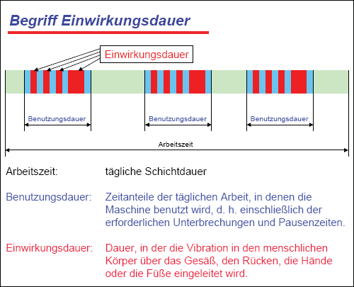
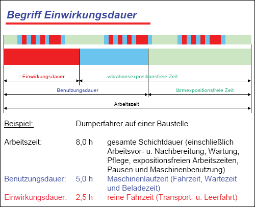
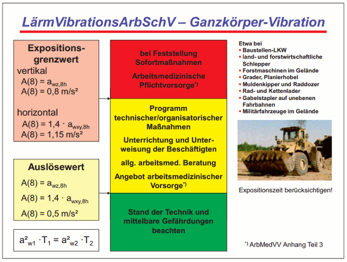
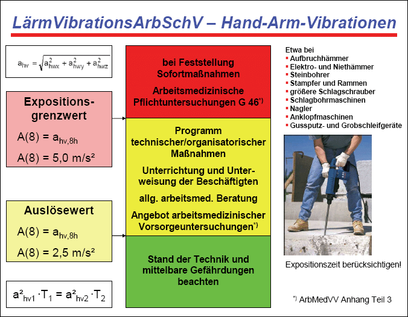

(1) Unter der Benutzungsdauer versteht man die Dauer der täglichen Arbeit, bei der die Maschine benutzt wird, d. h. einschließlich der für die Arbeit erforderlichen Unterbrechungen und Pausenzeiten, die mit der Benutzung in direktem Zusammenhang stehen. Für die Gefährdungsbeurteilung darf jedoch nur die arbeitstägliche Einwirkungsdauer (Expositionsdauer) herangezogen werden (siehe Abb. 2 und 3). Die Einwirkungsdauer ist die Dauer, während der die Hand die zu Vibrationen angeregte Fläche greift (Handgriff, Werkstück usw.) bzw. die Vibrationen über das Gesäß, die Füße oder den Rücken in den menschlichen Körper eingeleitet werden. So wird z. B. zur Bestimmung der Einwirkungsdauer beim Bohren von Dübellöchern mit einem Bohrhammer die meist nur wenige Sekunden dauernde Zeit für ein Bohrloch gemessen und dann mit der Zahl der am Tag gesetzten Dübel multipliziert. Bei der Arbeit mit einem Drehschrauber zählen nur die wenige Sekunden dauernden Losdreh- oder Festziehvorgänge und nicht die gesamte Zeit, in der das Gerät in der Hand gehalten wird. Es ist dabei zu beachten, dass die Einwirkungsdauer der Vibrationen im Allgemeinen deutlich unterhalb der Einwirkungsdauer des Lärms (z. B. durch die laufende Arbeitsmaschine) liegt.
(2) Zur Ermittlung der Einwirkungsdauer können Betriebsstundenzähler, Vibrations-Indikatoren (Expositionszeitmesser), Durchflusszähler bei pneumatisch betriebenen Geräten oder im Bereich Ganzkörper-Vibrationen Fahrtenschreiber oder einfache Messgeräte verwendet werden, die über einen Drucksensor verfügen, der den Kontakt des Fahrers mit dem Sitz erfasst. Schätzungen der Einwirkungsdauer sind meistens ungenau und werden anhand weiterer Daten (Wartungsintervalle, verbrauchte Arbeitsmittel etc.) überprüft. Bei Geräten mit Einzelauslösung, z. B. Nagler, Tacker oder Bolzensetzer, wird die Zahl der am Tag verbrauchten Nägel, Klammern oder Bolzen bestimmt. Die Bedienungsanleitungen der Hersteller oder auch die Listen der Orientierungswerte auf der Internetseite http://www.baua.de/TRLV enthalten Angaben zur Anzahl möglicher Einzelauslösungen bis zum Erreichen des Auslöse- oder Expositionsgrenzwerts.

Abb. 2 Zusammenhang zwischen Arbeitszeit, Benutzungsdauer und Einwirkungsdauer

Abb. 3 Beispiel zur Einwirkungsdauer bei Vibrationen im Unterschied zu Lärm
(3) Ist die Vibrationseinwirkung im Verlauf eines Tages nicht konstant, kann sie bei der Gefährdungsbeurteilung in repräsentative Expositionsabschnitte der Dauer Ti unterteilt werden. In einem solchen Belastungsabschnitt sollte die Einwirkung der Vibrationen, die an einen bestimmten wiederkehrenden Betriebszustand oder eine bestimmte Einsatzbedingung gekoppelt ist, bei jeder Wiederholung annähernd gleich sein (z. B. Leerfahrt über den Betriebshof). Bei der Verwendung unterschiedlicher Arbeitsmittel oder bei unterschiedlichen Betriebsbedingungen bei gleichem Arbeitsmittel sollten jeweils getrennte Expositionsabschnitte vorgesehen werden.
(4) Der Anteil belastungsfreier Zeiten (Pausen, Beladezeiten, Wartezeiten o. ä.) innerhalb eines Expositionsabschnittes sollte zehn Prozent nicht überschreiten oder gesondert ausgewiesen werden. Falls belastungsfreie Zeiten in die Messwerte für die Schwingbeschleunigung eingeflossen sind, so muss die Expositionsdauer diese im gleichen Umfang enthalten.
(1) Zur vereinfachten Bewertung der Exposition wurde das Ampelprinzip eingeführt. Den drei verschiedenen Ampelfarben sind Wertebereiche des Tages-Vibrationsexpositionswertes A(8) und die daraus abzuleitenden Maßnahmen zugeordnet. In den Abbildungen 4 und 5 sind das Ampelmodell, benötigte Formeln und Schwellenwerte sowie Maßnahmen zusammengefasst.
(2) Die Vorgehensweise zur Bestimmung des Tages-Vibrationsexpositionswertes A(8) bei Ganzkörper-Vibrationen ist in Anlage 2 erläutert, die Vorgehensweise bei Hand-Arm-Vibrationen in der Anlage 3.
(1) Er umfasst Vibrationsbelastungen mit Tages-Vibrationsexpositionswerten A(8) unterhalb der Auslösewerte. Insbesondere bei langjähriger Exposition kann auch in diesem Bereich eine Gefährdung nicht ausgeschlossen werden. Über die Dokumentation hinaus sind nach der LärmVibrationsArbSchV keine weiteren Maßnahmen gefordert, § 4 ArbSchG bleibt hiervon unberührt. Liegen noch mittelbare Gefährdungen oder Kombinationswirkungen vor, sind sie durch geeignete Maßnahmen nach dem Stand der Technik zu verringern.
(1) Er umfasst Vibrationsbelastungen mit Tages-Vibrationsexpositionswerten A(8) ab den Auslösewerten bis zu den Expositionsgrenzwerten. Es ist ein "dynamischer" Bereich, denn es besteht Handlungsbedarf. Es ist ein Plan technischer und organisatorischer Maßnahmen nach dem Stand der Technik zu erarbeiten und umzusetzen. Die Dokumentation der Gefährdungsbeurteilung umfasst die Angabe der zu ergreifenden Schutzmaßnahmen sowie Fristen und Verantwortliche für deren Umsetzung. Zur Festlegung konkreter Arbeitsschutzmaßnahmen gehört auch die Überprüfung von deren Wirksamkeit sowie die Fortschreibung der Gefährdungsbeurteilung.
(2) Ziel des Minimierungsgebots ist die Vermeidung der Vibrationsexposition, zumindest aber deren Verringerung. Nicht immer wird allerdings dabei trotz Anwendung aller Maßnahmen nach dem Stand der Technik der "Grüne Bereich" erreicht werden können.
(3) Falls alle Maßnahmen nach dem Stand der Technik ergriffen worden sind, müssen keine weiteren Maßnahmen getroffen werden. Sollten Beschäftigte aber auf Dauer im "Gelben Bereich" Vibrationen ausgesetzt sein, ist von einer Gefährdung auszugehen und es wird so verfahren, wie in den Abschnitten 3.1.2 und 3.5 der TRLV Vibrationen, Teil 3 beschrieben.
(4) Neben dem Aufstellen und Durchführen eines Programms technischer und organisatorischer Maßnahmen sind den Beschäftigten arbeitsmedizinische Vorsorgeuntersuchungen nach ArbMedVV Anhang Teil 3 Abs. 2 anzubieten und es ist eine allgemeine arbeitsmedizinische Beratung (Abschnitt 8) durchzuführen.
Auch die Unterrichtung und Unterweisung der Beschäftigten ist im "Gelben Bereich" erforderlich (Abschnitt 7).
Überschreiten die Tages-Vibrationsexpositionswerte A(8) die Expositionsgrenzwerte, sind Sofortmaßnahmen zu ergreifen, um die Vibrationsbelastung in den "gelben Bereich" bzw. sogar in den "grünen Bereich" zurückzuführen. Beim Erreichen oder Überschreiten der Expositionsgrenzwerte sind arbeitsmedizinische Pflichtuntersuchungen der betroffenen Beschäftigten erforderlich (ArbMedVV Anhang Teil 3 Abs. 1).

Abb. 4 Zusammenfassung der Forderungen zu Ganzkörper-Vibrationen

Abb. 5 Zusammenfassung der Forderungen zu Hand-Arm-Vibrationen
Die Belastung durch Hand-Arm-Vibrationen hängt u. a. von der Stärke der Ankopplung ab. Die Ankopplungskraft ist die Summe aus Andruckkraft und Greifkraft. Hohe Ankopplungskräfte bewirken eine intensivere Einleitung der an der Einleitungsstelle zu messenden frequenzbewerteten Beschleunigung in das Hand-Arm-System. Da sich die Messwerte für diese Kraftgrößen in der Praxis nur schwierig bestimmen lassen, werden die Ankopplungskräfte bei der Gefährdungsbeurteilung zur Prävention von Gesundheitsschäden in der Regel nicht berücksichtigt. Es sind aber zur Verringerung der Belastung solche Arbeitsverfahren und Geräte vorzuziehen, die nur geringe Ankopplungskräfte erfordern. Die Verringerung der Ankopplungskräfte durch technische Lösungen ist als mögliche zu ergreifende Maßnahme stets in Betracht zu ziehen.
(1) Bei der Gefährdungsbeurteilung sind mögliche Wechsel- und Kombinationswirkungen zu berücksichtigen.
(2) Die unten beschriebenen Effekte werden in der Literatur beschrieben. Die wissenschaftlichen Belege dafür sind in ihrer Ausprägung sehr unterschiedlich. Aus dem gegenwärtigen Wissensstand lassen sich keine quantitativen Abschätzungen der Wechsel- und Kombinationswirkungen ableiten.
(3) Der Arbeitgeber achtet darauf, dass nicht nur die Vibrationen, sondern auch die zusätzlich möglicherweise schädigenden Einflüsse minimiert werden (z. B. durch Bereitstellung von Kleidung zum Schutz vor Kälte und Nässe).
(4) Wegen der verschiedenartigen Wirkungsmechanismen und der Unterschiede in den möglichen Beeinträchtigungen oder Schädigungen, werden Ganzkörper-Vibrationen und Hand-Arm-Vibrationen getrennt betrachtet.
(1) Ganzkörper-Vibrationen können zu Rückenschmerzen und Beschwerden im Hals- und Schulterbereich und zu Schädigungen im Bereich der Wirbelsäule führen (z. B. Bandscheibenvorfälle, vorzeitiger Verschleiß). Da die Übertragung der Vibrationen von der Körperhaltung abhängt, ergeben sich für ein und dieselbe Exposition eventuell unterschiedliche Effekte. Als besonders schädigend im Zusammenhang mit Ganzkörper-Vibrationen werden folgende Bedingungen angenommen:
(2) Außerdem kann das Heben und Tragen schwerer Lasten im Wechsel mit Ganzkörper-Vibrationen stärker schädigende Effekte bedingen als eine der beiden Belastungen alleine (z. B. Fahrer von Lieferwagen). Ebenso können sich durch ungünstige klimatische Bedingungen (z. B. Kälte, Feuchte) Schmerzen und Beschwerden verschlimmern. Eine eventuelle verstärkende Wirkung von Lärm in Bezug auf die oben beschriebenen Beschwerden könnte sich über die Stresswirkung des Lärms erklären, da Muskel-Skelett-Schmerzen teilweise über psychologische Prozesse modifiziert werden können. Es gibt Hinweise darauf, dass subjektiv die Gesamtsituation als belastender und die Leistungsvoraussetzungen als geringer eingeschätzt werden, wenn Vibrationen und Lärm gleichzeitig einwirken.
(1) Hand-Arm-Vibrationen können zu Durchblutungsstörungen der Finger und zu neurologischen und motorischen Funktionsstörungen an Händen und Armen durch Veränderungen an sensorischen Systemen, Sehnen und Knochen führen. Die gleichzeitige Einwirkung von Lärm könnte wegen der zumindest zeitweilig gefäßverengenden Lärmwirkung alle Effekte verstärken, die auf Durchblutungsstörungen zurückzuführen sind. Ungünstige klimatische Bedingungen, insbesondere Kälte, in Kombination mit Hand-Arm-Vibrationen sowie starke Greif- und Andruckkräfte (Ankopplungskräfte) erhöhen das Risiko für das Auftreten der Beschwerden. Hingegen können geringere Ankopplungskräfte die Vibrationsexposition reduzieren.
(2) Folgende Maßnahmen reduzieren dieses zusätzliche Risiko:
(1) Die Gefährdungsbeurteilung umfasst bei Exposition durch Vibrationen auch die Auswirkungen auf die Gesundheit und Sicherheit von Beschäftigten, die besonders gefährdeten Personengruppen angehören.
(2) Dazu gehören insbesondere
Personen mit eingeschränkter Belastbarkeit, wie
Personen mit ungenügender Erfahrung oder unzureichenden Kenntnissen, wie
Nach den Vorschriften zum Mutterschutz genießen Schwangere und stillende Mütter einen besonderen Schutz. Die Forderungen aus dem Mutterschutzgesetz (MuSchG) und der Verordnung zum Schutz der Mütter am Arbeitsplatz (MuSchArbV) sind hinsichtlich des Schutzes Schwangerer vor "gesundheitsschädigenden Erschütterungen/Vibrationen" vom Arbeitgeber zu beachten. Dabei ist rechtzeitig eine Gefährdungsbeurteilung gem. MuSchArbV zu erstellen und bei Gefährdung sind geeignete Maßnahmen zu ergreifen.
Bei Jugendlichen ist von einer geringeren Belastbarkeit gegenüber Vibrationen auszugehen, da die Skelettreifung noch nicht vollständig abgeschlossen ist. Deshalb besteht nach § 22 (1) Nr. 5 JArbSchG ein Beschäftigungsverbot für Jugendliche für Arbeiten, bei denen sie schädlichen Einwirkungen von Erschütterungen ausgesetzt sind. Allerdings gilt das nicht bei Jugendlichen über 16 Jahren für Arbeiten, die zur Erreichung ihres Ausbildungsziels erforderlich sind und bei denen der Schutz der Jugendlichen durch die Aufsicht von Fachkundigen gewährleistet ist (§ 22 (2) JArbSchG). Die Aufsicht soll besonders schädigende Körperhaltungen und andere gefährdende Expositionsumstände vermeiden helfen.
Beschäftigte mit Vorerkrankungen, die zu Einsatzeinschränkungen führen können, sind z. B. Personen mit Schädigungen des Muskel-Skelett-Systems oder im Fall von Hand-Arm-Vibrationen auch mit Durchblutungsstörungen der oberen Extremitäten. Es ist jeweils der Einzelfall zu betrachten. Hierbei sollte der Betriebsarzt den oder die Beschäftigte(n) beraten. Der Beschäftigte ist nicht verpflichtet, seine Vorerkrankungen offen zu legen.
Die Beanspruchung des menschlichen Organismus hängt neben den reinen Belastungsparametern (Art, Ausmaß und Dauer der Vibrationsexposition) auch von den Kenntnissen, Fähigkeiten und Fertigkeiten der Beschäftigten ab. Aufgrund ihrer geringen Berufserfahrung zählen Auszubildende, andere Berufsanfänger und Praktikanten zu den besonders gefährdeten Personengruppen. Der Umgang mit Arbeitsmaschinen erfordert Erfahrung, um sie vibrationsarm zu betreiben und die Einleitung von Vibrationen möglichst gering zu halten. So erlernt beispielsweise ein Steinmetz erst im Verlaufe der Berufsausübung, den druckluftbetriebenen Meißelhammer mit geringen Ankopplungskräften effizient, sicher, geschickt und vibrationsarm zu führen.
Auch Leiharbeitnehmer sind zu Beginn ihrer Tätigkeit Neulinge im Betrieb. Betriebsabläufe und besondere Gefährdungssituationen sind ihnen noch nicht umfassend bekannt. In den Unterweisungen und bei der Aufgabenübertragung ist deshalb besonders darauf zu achten, dass ihnen alle notwendigen Informationen über die Gefährdung durch Vibrationen sowie zu den betrieblichen Vibrationsschutzmaßnahmen bekannt gemacht werden.
Generell hat der Arbeitgeber bei der Übertragung von Aufgaben auf Beschäftigte sowohl deren Befähigung für die Einhaltung der Bestimmungen zu Sicherheit und Gesundheitsschutz zu berücksichtigen (§ 7 ArbSchG) als auch deren individuellen Gesundheitsschutz sicherzustellen (§§ 3 und 4 ArbSchG).
(1) Üblicherweise treten in Gebäuden keine Vibrationen auf, deren Ausmaß alleine eine Gesundheitsgefährdung bewirken würde. Die Tages-Vibrationsexpositionswerte A(8) liegen oft deutlich unterhalb der Auslösewerte für Ganzkörper-Vibrationen – also im "Grünen Bereich" nach dem Ampelmodell für unmittelbare Gefährdungen. Dennoch können Gebäudeschwingungen im Einzelfall die Wahrnehmung und gegebenenfalls die Leistungsfähigkeit beeinträchtigen. Damit kann auch eine erhöhte Unfallgefahr verbunden sein, etwa bei Überwachungsaufgaben.
(2) Derartige mittelbare Gefährdungen der Sicherheit und der Gesundheit der Beschäftigten oder auch Dritter liegen vor, wenn z. B. durch Vibrationen die Erfassung von Anzeigeinstrumenten gestört wird, oder mobile Maschinen nicht sicher bedient werden können, oder wenn Vibrationen die Stabilität der Strukturen oder die Festigkeit von Verbindungen (z. B. von Gebäuden, Maschinen oder Anlagen) beeinträchtigen. Dazu zählen auch unscharfe Monitordarstellungen infolge von Gebäudeschwingungen, angeregt durch Pressen, Stanzen, Rotationsdruckmaschinen oder auch Straßenverkehr. Derartige unscharfe Bilder können bei mehrstündiger Einwirkung zu Kopfschmerzen führen, die einhergehenden Leistungsbeeinträchtigungen auch zu psychischen Fehlbelastungen und Gesundheitsstörungen wie Stress oder auch Angst vor Fehlleistungen etc.
(3) Für die Beurteilung der mittelbaren Gefährdungen durch Vibrationen können keine allgemeingültigen Grenzwerte oder Auslösewerte genannt werden. Jeder Einzelfall ist gesondert zu betrachten. Es lassen sich jedoch Anhaltswerte für die frequenzbewertete Schwingbeschleunigung bei bestimmten Anforderungsarten aus der Praxis ableiten, die möglichst unterschritten werden sollten.
(4) In einigen Sonderbereichen, z. B. Schmiedehallen oder Gießereien, ist die Einhaltung dieser in Tabelle 1 genannten Anhaltswerte derzeit auch bei Anwendung von Maßnahmen nach dem Stand der Technik nicht immer möglich.
(5) In Tabelle 1 sind awe die frequenzbewertete Schwingbeschleunigung in der Einwirkungsdauer und max{awF(t)} der Maximalwert des gleitenden Effektivwerts der frequenzbewerteten Beschleunigung mit der Integrationszeitkonstanten τ = 0,125 s.
| Tab. 1 | Anhaltswerte der frequenzbewerteten Schwingbeschleunigung in Abhängigkeit von unterschiedlichen Anforderungsarten, die möglichst unterschritten werden sollten |
| Einwirkungsort | In x-, y-, z-Richtung jeweils | ||
| awe in m/s² | A(8) in m/s² | max{awF(t)} in m/s² | |
| Erholungsräume, Ruheräume, Sanitätsräume (evtl. auch Aufenthaltsräume) | 0,01 | 0,03 | |
| Arbeitsplätze mit hohen Anforderungen an die Feinmotorik (z. B. Forschungslabor) | 0,015 | 0,015 | |
| Arbeitsplätze mit überwiegend geistiger Tätigkeit (z. B. Schaltwarten, Büroräume) | 0,015 | 0,045 | |
| Arbeitsbereiche mit erhöhter Aufmerksamkeit (z. B. Werkstätten) | 0,04 | 0,12 | |
| Arbeitsbereiche mit einfachen oder überwiegend mechanischen Tätigkeiten | 0,08 | ||
| Sonstige Arbeitsbereiche | 0,15 | ||
(6) Die Arbeitgeber sind verpflichtet, auch mittelbare Gefährdungen durch Vibrationen zu vermeiden und wenn deren Beseitigung nicht möglich ist, sie so weit wie möglich zu vermindern.